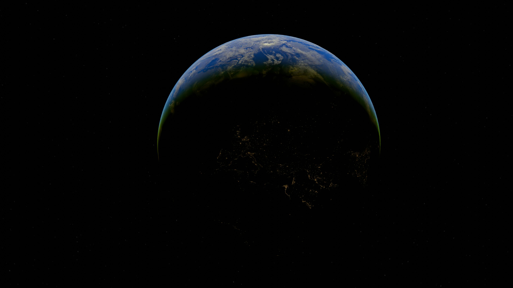
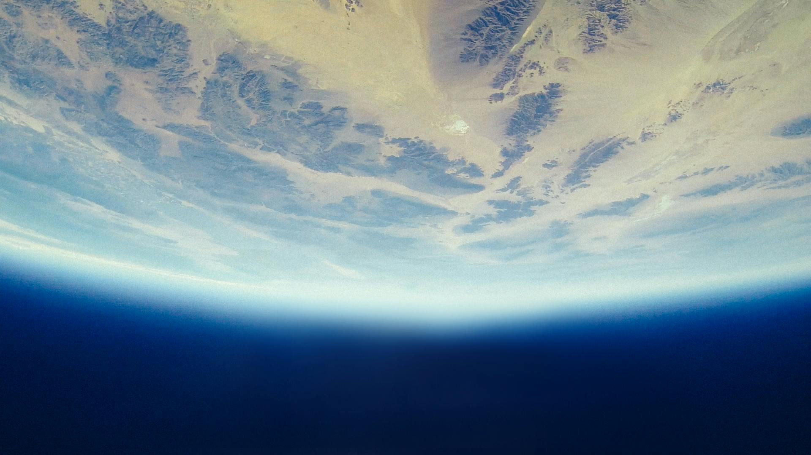
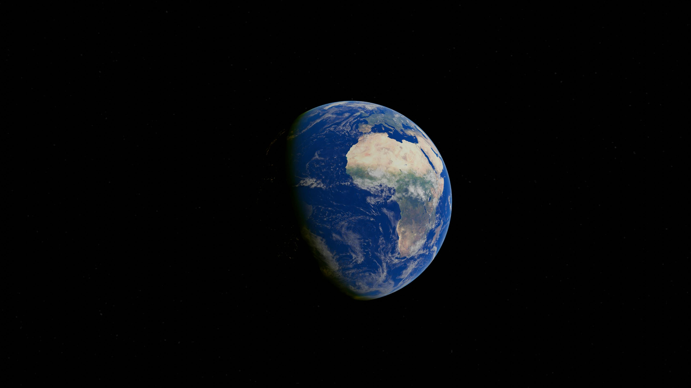
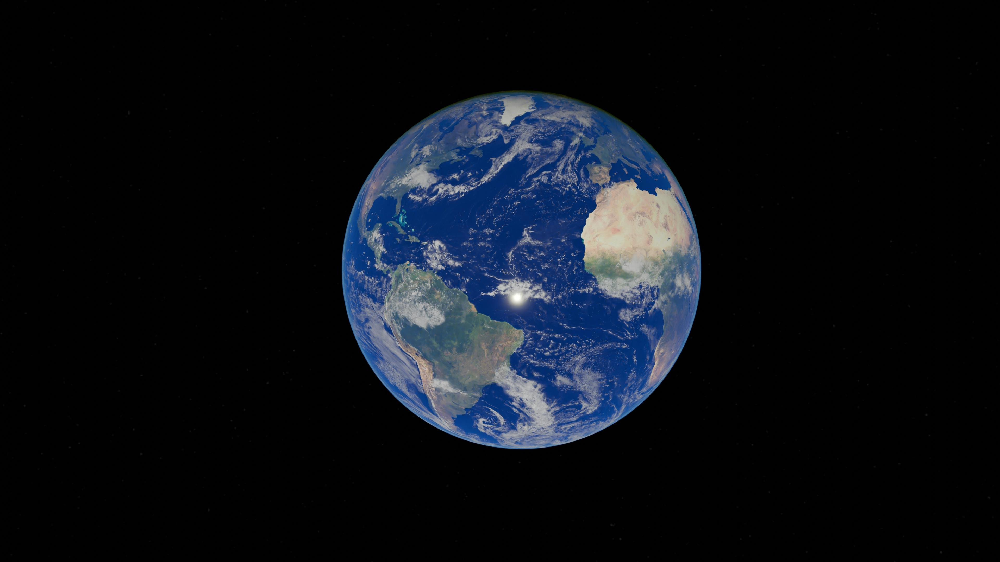

Earth
The only world known to support life, and the standard by which all other planets are measured.
Earth is the third planet from the Sun and the only astronomical object confirmed to harbor life. At approximately 4.5 billion years old, it has developed a rich biosphere shaped by the presence of liquid water, a protective atmosphere, and a magnetic field generated deep within its interior.
About 71 percent of Earth's surface is covered by water, a feature unique among the rocky planets of the inner solar system. This vast ocean regulates global temperature, drives weather systems, and provides the conditions necessary to sustain life on land and at sea.
The planet's interior generates a strong magnetic field through the circulation of molten iron in its outer core. This magnetosphere extends far into space and deflects harmful charged particles from the Sun, shielding both the surface and the atmosphere from gradual erosion.
Earth has one natural satellite, the Moon. Its size relative to Earth is unusual among rocky planets, and the Moon's gravitational influence has stabilized Earth's axial tilt for billions of years, helping to maintain the climate conditions that allow complex life to survive and evolve.




Earth is the only planet with stable liquid water on its surface. Oceans cover 71 percent of the globe, reaching a maximum depth of nearly 11 kilometers in the Mariana Trench. Water is essential to all known life and drives the planet's weather and long term climate.
Earth's outer core is composed of liquid iron and nickel in constant motion. This generates a dynamo effect that produces a magnetosphere extending tens of thousands of kilometers into space, deflecting the solar wind and preventing the atmosphere from being gradually stripped away over geologic time.
Earth's crust is divided into large sections called tectonic plates that move slowly across the surface. Their interactions produce earthquakes, volcanic eruptions, and mountain ranges. The process also cycles carbon between the atmosphere and rock over millions of years, helping to regulate the long term climate.
Earth hosts an estimated 8.7 million species distributed across its oceans, land surfaces, soil, and lower atmosphere. Life has fundamentally altered the planet's chemistry. The oxygen in the atmosphere is entirely a biological product, accumulated over billions of years of photosynthesis by early microbes.
Earth sits within the Sun's habitable zone, the range of orbital distances where liquid water can exist on a planetary surface. Small changes in orbital distance or solar output could shift the planet into a runaway greenhouse state or a permanent ice age, either of which would be fatal to most existing life.
The Moon stabilizes Earth's axial tilt within a narrow range over millions of years, preventing the extreme climate shifts that would otherwise occur. Its tidal forces also slow Earth's rotation gradually and may have played a role in the emergence of early life through regular tidal cycling in coastal environments.
Earth accretes from the solar nebula. Shortly after, a Mars sized body is thought to have collided with the young planet, ejecting material that eventually coalesced into the Moon. The surface was initially molten and covered by a global magma ocean.
A period of intense asteroid and comet impacts reshapes the surface. Water is delivered to Earth by these bodies and begins accumulating in basins as the crust cools, forming the earliest oceans.
Microbial life appears, preserved in ancient rock formations called stromatolites. These early organisms are prokaryotic and lack a cell nucleus, but they begin to alter the chemistry of their environment through metabolic activity.
Cyanobacteria begin producing oxygen through photosynthesis in large quantities. Oxygen builds up in the atmosphere, proving toxic to most life of the time but paving the way for complex aerobic organisms that would eventually dominate the planet.
Most major groups of animals appear in the fossil record within a brief window of time. Complex multicellular life diversifies rapidly in the oceans, establishing the fundamental body plans that most animal groups still use today.
A large asteroid strikes what is now the Yucatan Peninsula, triggering fires, a prolonged winter caused by atmospheric debris, and the extinction of roughly 75 percent of all species. Non avian dinosaurs are lost. Mammals survive and diversify in the ecological space left behind.
Anatomically modern humans appear in Africa. Over tens of thousands of years, our species spreads across all continents, eventually developing agriculture, writing, cities, and technology including spaceflight.
Because Earth rotates, centrifugal force causes it to bulge slightly at the equator. The equatorial diameter is about 43 kilometers wider than the polar diameter. The point on Earth's surface farthest from its center is not the peak of Everest but Mount Chimborazo in Ecuador.
Tidal friction between Earth and the Moon is slowly transferring rotational energy outward, causing Earth's rotation to decelerate at roughly 1.4 milliseconds per century. Billions of years ago an Earth day was only around six hours long.
Earth's inner core reaches temperatures comparable to the surface of the Sun, above 5,000 degrees Celsius. Yet it remains solid because the pressure at that depth is so immense that it prevents the iron and nickel there from melting regardless of the temperature.
Microbial life has been found in boreholes drilled more than five kilometers into the crust, and living organisms survive in the deepest ocean trenches. The total biomass of all subsurface microbial life may be comparable in scale to all life visible at the surface.